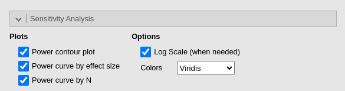

Sensitivity analysis
0.4.0

In all sub-modules of r modulename(), it is possible to conduct a sensitivity analysis. Sensitivity analysis allows users to explore various scenarios by observing how one power parameter changes as a function of another parameter. The results are displayed graphically, enabling users to easily visualize a wide range of parameter values and their impact on the analysis at a glance.
Power contour plot
Power contour plot visualizes the power from low (green) to high (yellow) as a function of possible sample sizes (x-axis) and effect sizes \(es\). Each sub-module plots a particular effect size (i.e correlation, eta-square, mediated effect, ect), but the interpretation of the plot does not change.

In the power contour plot, the solid line represents combinations of sample size (N) and effect size that yield the required power, such as 0.90 in this example. By interpreting the plot, you can see how power would change if you had underestimated the effect size (moving down on the y-axis) or underestimated the sample size (moving left on the x-axis). This provides a useful way to assess how sensitive your power analysis is to potential errors in estimating these key parameters.
The y-axis scale in the power contour plot, which represents values of the effect size, is designed to depict values around the input or estimated effect size. Typically, the range of the y-axis is set from approximately from \(es/3\) to \(es∗3\), where \(es\) stands for the effect size. However, in some sub-modules, adjustments to the scale may be made to enhance the readability and clarity of the plot. This ensures that the graph focuses on a meaningful range of effect sizes, making the sensitivity analysis more informative.
Power curve by effect size
The second plot we can ask is the
Power curve by effect size . It portraits how the power
(y-axis) chances as one increases the effect size (x-axis).
The solid line in the plot illustrates how power changes as the effect size increases, given a fixed sample size (in this example, \(N=258\)) and a fixed type I error rate (\(\alpha\)=.05). In this particular example, we observe that if the actual effect size is lower than the target value of 0.20 (represented by the white dot), the expected power will decrease rapidly. For instance, with an effect size of 0.1, the estimated power would drop significantly to around 0.30.
Power curve by N
The second plot we can ask is the Power curve by N . It
portraits how the power (y-axis) chances as one increases the sample
size (x-axis).
The solid line in the plot illustrates how power changes as the sample size increases, given a fixed effect size (in this example, \(es=.20\)) and a fixed type I error rate (\(\alpha\)=.05). In this particular example, we observe that if the actual sample size is lower than the target value of around 230 cases, the expected power will decrease rapidly. For instance, with one collects only around 130 cases, the estimated power would drop to around 0.60.
Options
Log scale (when needed)
Depending on the specific application and the combination of power parameters, some plots might appear unclear or distorted. In such cases, the Log scale (when needed) option can be helpful. It converts the axis scale from linear to logarithmic, making the values more readable. For instance, in the Power curve by N plot above, using a logarithmic scale evenly distributes the x-axis values, ranging from the minimum \(N=19\) (yielding a power of 0.10) to the maximum \(N=2359\) (yielding a power of 0.99). If the Log scale (when needed) option is deselected, the plot would revert to a linear scale, which might look less clear depending on the context.
There are other cases in which the plots are clearer without the logarithm scale. Users can choose the scale that better suits their needs.
Log transform, even when selected by the user, is often not applied
to Power curve plot because this plot looks better in
linear scale. For some effect size and N combinations, however, the log
transformation is applied if the user select it.
Colors
The default colors of the plots use the popular
Viridis palette from the Viridis
R package. Form the same package, other palettes are available, plus
a grey scale named Husky (not from viridis).
Return to main help pages
Main page’
Comments?
Got comments, issues or spotted a bug? Please open an issue on PAMLj at github or send me an email